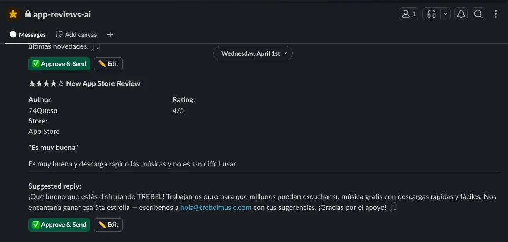
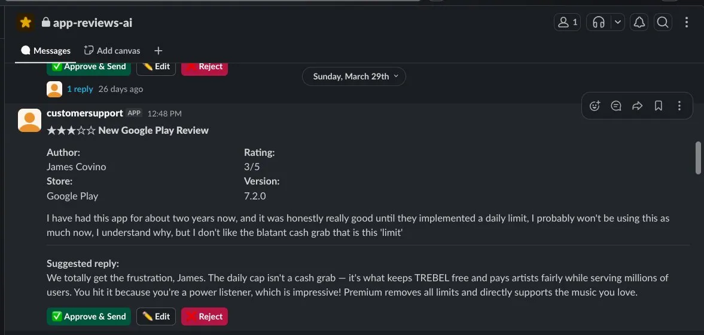
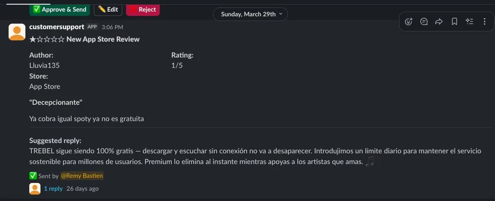
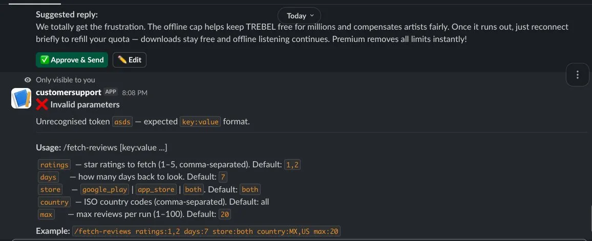

A Slack bot for Customer Support that drafts AI replies to App Store
and Play Store reviews, then routes them through an approval flow.
LIVE·shipped: Mar 2026·platform: Slack
01
LEVEL 1 START
Across the app industry, store reviews are one of the highest-leverage
feedback channels a product has. They show up directly in the App Store
and Google Play listings, they shape ranking signals, and they're often
the first thing a future user reads before deciding to install. The
catch is that responding to them at scale is genuinely hard.
~18%
NEGATIVE REVIEWS ANSWERED
industry average for 1-2 star reviews on Google Play
2-4 days
TYPICAL REPLY TIME
faster responses lift ratings, manual workflows rarely keep that pace
+0.4★
BOOST WHEN CONSISTENT
rating lift observed when 50%+ of reviews get a reply
The numbers tell you that there's a structural challenge.
The harder question is why, and that part doesn't really
have anything to do with effort or care from any specific team. It's
almost always one of four root causes:
MANUAL PROCESS
Each store has its own dashboard. Replies happen one at a time,
one window at a time. There's no unified inbox.
VOLUME OVERLOAD
Hundreds of reviews per week across two stores. Queue grows faster
than any team can answer it from scratch.
VOICE CONSISTENCY
Replies vary in tone depending on who's typing that day. Hard to
keep one brand voice across many hands.
LANGUAGE BARRIERS
Reviews come in Spanish, Portuguese, French, and more. Native
replies in every market take resources most teams don't have.
▸ AT TREBEL
The Customer Support team has been carrying all four of those weights at
once. Multiple stores, multiple markets (Mexico and the US as the
biggest, with reviews in both English and Spanish), and a steady weekly
volume that grows with the user base. The team has been doing the
thoughtful, hand-typed replies the brand deserves, but the math gets
impossible past a certain queue size.
At the same time, the brand has spent years building exactly the kind
of material that should make replies easier. Brand voice docs.
Tone-by-market guidance. Escalation rules. Standard responses for the
most common topics. All of it lives in shared docs that any human
reading them could write a great reply.
So the real question wasn't "how do we reply faster", it was
"why is a human still typing every reply from scratch when the
playbook is already written?"
The idea: feed that knowledge base into AI, let it draft a first
response per review, and put a Slack approval flow on top so the
Customer Support team can approve, edit, or skip with one click. Keep
the judgment human. Hand the typing to the machine.
02
BOSS FIGHT
How do you give the Customer Support team autonomy and control instead
of replacing them with a black box that posts replies for them?
Replacement was off the table from day one. Auto-posting AI replies
without a human review would have eroded the trust the bot was
supposed to build.
The win condition was different: build a tool that does 80% of the
work so the 20% that still needs human judgment (tone calls,
escalations, edits) gets the attention it deserves.
✗ BEFORE
Open App Store Connect or Play Console. Re-read the review.
Translate to the right language. Watch the character counter.
Submit. Repeat 40 times.
Per review: 3 to 8 minutes of focused work. High cognitive
load. Inconsistent voice across teammates. No batch handling.
✓ AFTER
A draft appears in Slack. On-brand. In the reviewer's language.
Under the character limit. Agent reads, hits Approve or Edit.
Card updates to show who sent what.
Per review: under 30 seconds. No context switch. Consistent
tone across the team. Triage and ship in one place.
The autonomy showed up in three product decisions:
Fetch on demand, not always-on. The Customer Support team
types /fetch-reviews with the params they want (store,
country, ratings, lookback). They decide when to triage, what to
triage, how much to triage. The bot doesn't push, it pulls when
asked.
Edit always available. Every card has Edit, not just Approve.
If the draft is 90% right, the agent fixes the last 10% in a modal
and submits. The bot is a starting point, not an answer.
The voice rules are the team's, not the bot's. Tone,
escalation phrases, language, brand do's and don'ts, all live in a
knowledge-base.md file Claude reads on every draft.
Update the file, the voice updates everywhere. The team owns the
output even when the machine writes it.
▸ THE BOT IN PRODUCTION

APP STORE
draft in Spanish, ready to ship. Approve and Edit visible.

GOOGLE PLAY
English reviewer, English draft. Same loop, both stores.

ERROR HANDLING
bad params get a usage hint, not a 500.

REVIEW SENT
card updates to "✅ Sent by @user" after one-click approval.
⚠ GOTCHA · APP STORE TERRITORY FILTER
The App Store Connect API accepts a filter[territory]
query param, documents it, and returns 0 results when you use it.
Fix: remove the param, paginate fully, filter client-side via
attributes.territory. Google Play had no equivalent
issue, which made the silence on Apple's side especially confusing
for an afternoon.
⚠ GOTCHA · MISSING_SCOPE WAS SLACK, NOT THE STORES
Approve clicks were failing with a missing_scope
error. First instinct: store-side API key roles, since that's
where the reply gets posted. Wrong. The error was actually on
Slack's side. Updating a posted card after a button click needs
channels:history, groups:history, and
im:history, scopes that weren't in the original
OAuth set. I figured it out by adding a console.log
right before the store API call. When the log showed clean data
going out and the store call succeeding, the failure
had to be the Slack-side update path. Lesson: log before you
guess.
✓ WIN · API-LEVEL REPLY CHECK SHIPPED
Early on, the bot only checked the local DB to decide if a review
was already answered. That meant manual replies posted directly in
Play Console or App Store Connect would still surface in Slack on
the next fetch, doubling work and confusing the team. I closed
that loop by checking DeveloperComment on Google Play
and customerReviewResponse on Apple at fetch time.
Reviews replied to anywhere, by anyone, now drop out of the queue
before the bot ever drafts a response.
03
INVENTORY
Free-tier where it works, paid where it matters.
▸ EQUIPMENT
serverRenderNode.js 18 + TypeScriptFree
databaseNeonPostgres 17 · 4 tablesFree
aiAnthropicClaude Sonnet 4.5~$0.01/review
botSlack Bolt SDKwebhook + actionsFree
source controlGitHubpush → auto deployFree
▸ HIGH-LEVEL ARCHITECTURE
▸ FULL DATA PIPELINE
AI Dev tools / data Server / compute Store APIs Slack / human
▸ STEP-BY-STEP WALKTHROUGH
End-to-end flow from slash command to reply posted in the store.
1
CS AGENT RUNS /FETCH-REVIEWS IN SLACK
Command typed in #app-reviews-ai with parameters
controlling what to fetch.
Authenticated via short-lived JWT (RS256, 20-min expiry).
Territory filter happens client-side after pagination, since
the API returns 0 results when you pass
filter[territory] directly.
The server checks sent_replies in Postgres. Any
review with an existing reply is dropped. Only genuinely
unanswered reviews move forward.
Neon Postgressent_replies table
6
SAVE NEW REVIEWS TO DB
Each new review is written to reviews with
replied=false. A draft slot is created in
response_drafts, ready for the AI response.
reviews tableresponse_drafts table
7
CLAUDE GENERATES ONE DRAFT PER REVIEW
The server calls the Anthropic API with the review text plus
knowledge-base.md as context. Claude writes a
brand-appropriate response, matched to the reviewer's
language. Reply capped at 350 characters (Google Play hard
limit).
One Slack message per review. Shows store, rating, review
text, AI draft, and action buttons. The Slack message ID is
stored in slack_messages so the server can route button
clicks and update the card later.
✅ Approve & Send✏️ Editslack_messages table
9
CS AGENT READS THE DRAFT AND DECIDES
Approve sends the AI draft as-is. Edit opens a Slack modal
with the draft pre-filled. The agent edits and submits. The
server enforces the 350-char limit on submission too, not
just on generation.
10
RENDER POSTS REPLY TO STORE
Slack sends the click or modal submission to
/slack/actions. Render looks up the review,
calls the store API to submit, writes to
sent_replies, and updates the Slack card to
✅ Sent (by @user).
Google Play: instantApp Store: 2-24 hrssent_replies updatedSlack card updated via msg ID
▸ AI CONTEXT FILE
knowledge-base.md
Lives on Render at project root. Loaded at server startup.
Controls Claude's tone, language detection, escalation rules,
and brand voice. Edit the file and redeploy to update AI
behavior without touching code.
AI-generated reply text per review, linked to review ID.
slack_messages
Slack message ID per review for button routing and card updates.
sent_replies
What was sent, when, by which Slack user, whether it was edited. Used for dedup on next fetch.
▸ SOURCE APIS
STORE
AUTH
TERRITORY FILTER
GET LIMIT
REPLY SPEED
Google Play
Service account JSON
API-level (country param)
200 req/hr
Instant
Apple App Store
JWT RS256 · 20 min expiry
Client-side via attributes.territory
~3,600 req/hr
2-24 hrs
04
XP GAINED
▸ AI POWER-UPS
building with ai
ANTHROPIC API, NOT CHAT PROMPTING
First project where I went past the chat window and built
directly against the Anthropic API. Streaming responses,
system prompts committed to a repo, token costs in
production. The mental model shifts from "I'm asking
Claude" to "Claude is a function I'm calling, and I
own everything around the call."
KNOWLEDGE-BASE.MD AS THE LEVER
A shared markdown file is the single biggest lever for AI
output quality. Tone rules, escalation phrases, language
per market, brand do's and don'ts. All in one place. Change
the voice by editing a file, not by rewriting prompts.
TWO-CLAUDE WORKFLOW HACK
Ran Claude Code (the dev agent in VS Code) and Claude in
chat side by side, both as coding assistants. Claude Code
wrote and ran the actual code in the repo. Claude in chat
got the same diffs and acted as a second pair of eyes:
spot-checking logic, suggesting edge cases, drafting
alternative implementations. Two AI coders cross-referencing
each other instead of one black box. Faster than either
alone.
▸ PRODUCT SPECIAL MOVES
product thinking
AUTONOMY, NOT REPLACEMENT
The product framing that stuck. Every decision flowed from
it. Fetch on demand, not always-on. Edit always available,
not just Approve. Voice rules owned by the team in a
markdown file, not buried in code. Whenever I drifted
toward "just let it post automatically," I caught myself.
THE BOT IS THE TYPIST, NOT THE EDITOR
The right division of labor. Machine does the boring 80%
(drafting, language matching, character counting). Human
does the 20% that needs judgment (tone calls, escalations,
edits). Once that framing was clear, the UI almost designed
itself.
▸ DEV SECRETS DISCOVERED
development learnings
FULL-STACK FROM PM SEAT
First time I owned the full stack end-to-end as PM. Server
setup on Render, Postgres schema and migrations on Neon,
Slack app config and OAuth scopes, both store API
integrations (Google Play + Apple), CI through GitHub
pushes, environment variables, deploys. Things I would
have handed off, I owned here. The shape of "what's
actually hard about shipping" looks different from this seat.
LOG BEFORE YOU GUESS
Most "is it our code or theirs?" debates can be settled by
one console.log at the boundary, printing the
exact payload going out before the third-party call. Stop
guessing, see real data. This was the cheapest, highest-
leverage debugging discipline I picked up on this build.
USE CLAUDE TO DEBUG CLAUDE
Applied the log-first principle on the missing_scope bug.
Asked Claude Code to add the boundary log before the store
API call, redeployed, and saw clean data going out and
succeeding, which narrowed the failure to the
Slack-side update path. Five minutes from "we're stuck" to
"it's the Slack OAuth scopes." The dev craft is knowing
where the log goes. Claude just made it instant to put it
there.
TWO STORE APIS, TWO AUTH FLOWS
Google Play uses Service Account JWT, App Store uses RS256
JWT with 20-minute expiry. They look similar but are
different enough that copy-pasting one to the other is a
trap. Keep them in separate modules. Don't abstract
prematurely.
ENFORCE CONSTRAINTS TWICE
Belt and suspenders on every constraint that touches a
third-party API. App Store caps replies at 350 chars. The
first enforcement happens at draft generation, the second
at modal submission. Without the second one, an edited
reply could go over and the API would reject silently.
▸ SIDE QUESTS
future iterations
REJECT BUTTON THAT FEEDS BACK
Today the agent has Approve and Edit. Adding Reject with a
one-line reason ("wrong tone," "missed the issue,"
"hallucinated a feature") would turn every rejection into a
labeled training signal for the knowledge base.
CLOSE THE FEEDBACK LOOP
Track rejection rate over time. Watch it drop as the
knowledge base learns. Once acceptance hits ~95% on routine
reviews, automate that batch (still with audit), and let
the team focus on the 5% that needs judgment. Same
autonomy framing, just shifted upstream.